Project 4
Neural Radiance Field!
Part 0.3 - Estimating Camera Pose
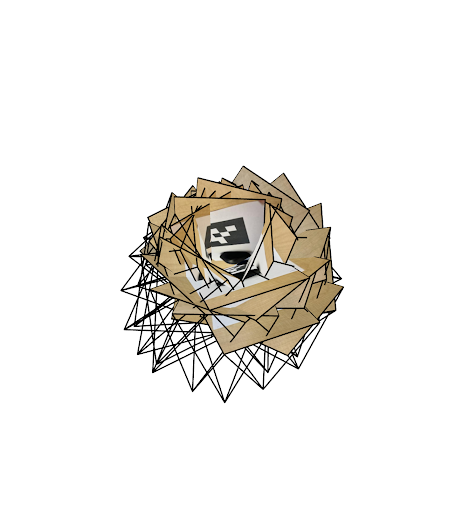
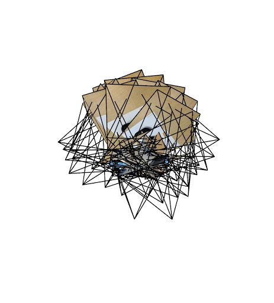
Task 1 - Fit a Neural Field to a 2D Image
There are 5 linear layers in total (1 input layer, 3 hidden layers, 1 output layer). The width is 256. The learning rate is 1e-2. Some other important details are L=10 for positional encoding, 3000 training iterations, and 10000 batch size.
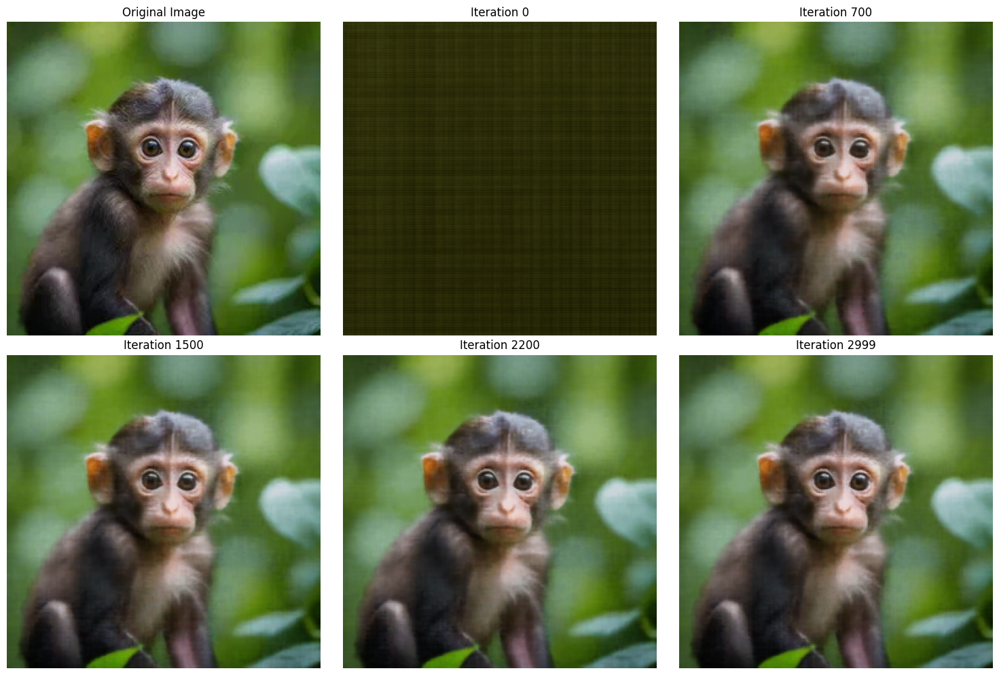
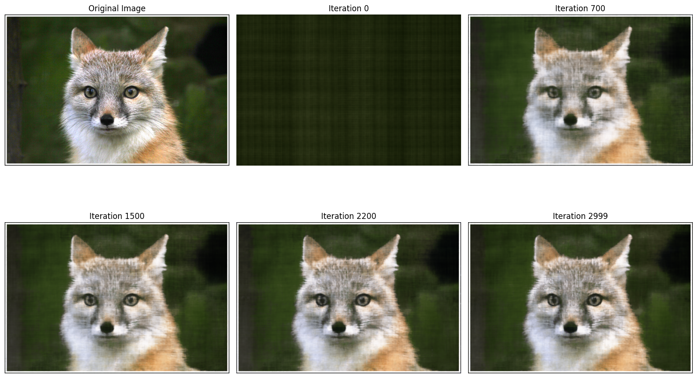
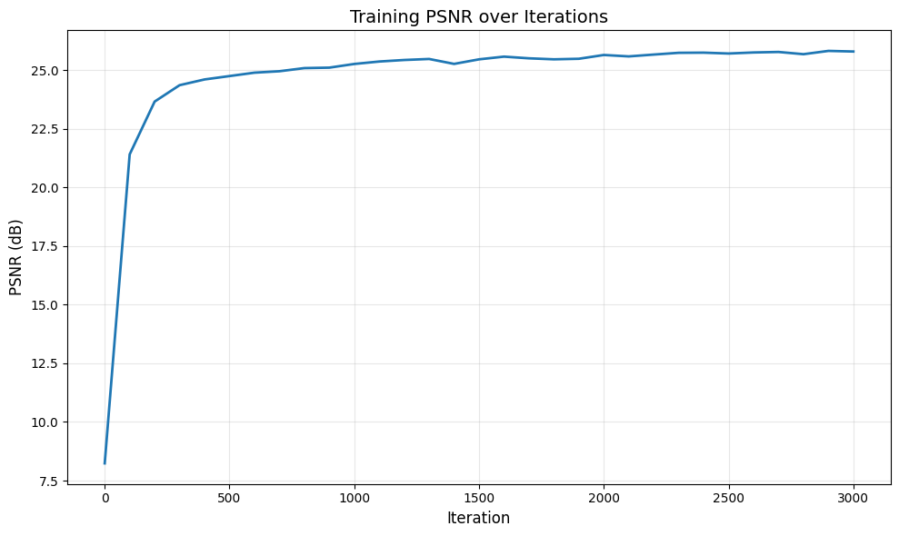
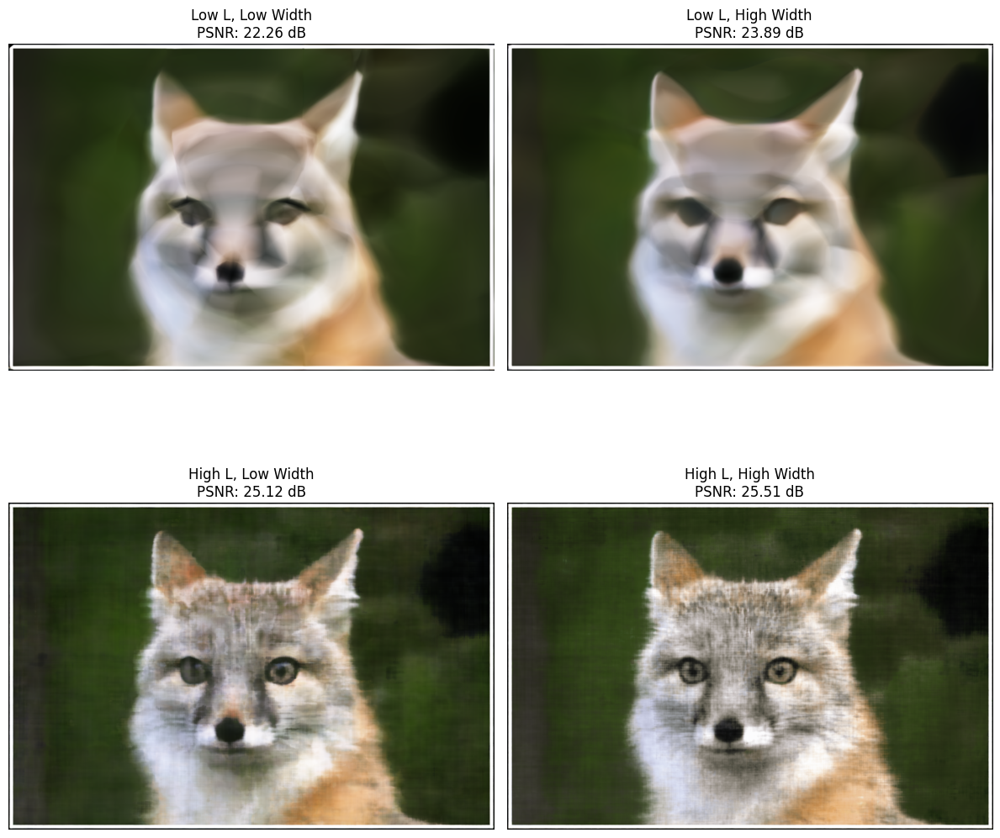
Task 2.1-2.5 - Fit a Neural Radiance Field from Multi-view Images
To create rays from cameras, I first convert pixel coordinates to camera space using the camera intrinsics (K matrix). Then, the camera space points are transformed to world space using the c2w matrix. To sample points along rays, we use stratified sampling between the near and far values. We also add random perturbation for better training. With the ray dataset and dataloader, we precompute the rays for the training images. The NeRF architecture is 8 MLP layers with a skip connection at layer 5. The width is 256, and L_pos = 10, L_dir = 4 for the positional encoding. We have separate heads for density and RGB. For volume rendering, we use alpha compositing to accumulate colors along the ray using transmittance weighting.
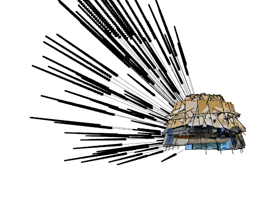
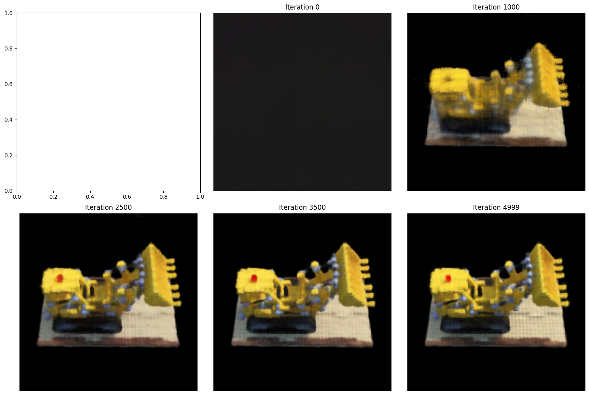
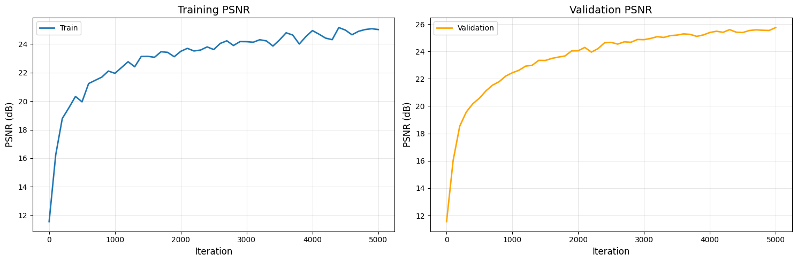
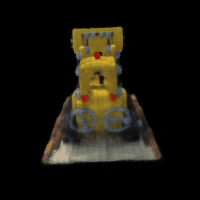
Task 2.6 - Training with your own data
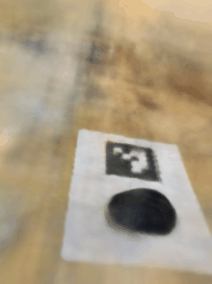
I did not need to make drastic code changes, the main thing was changing the near and far values so that the rays were being sampled from the right distances (using appropriate near and far values that I calculated).
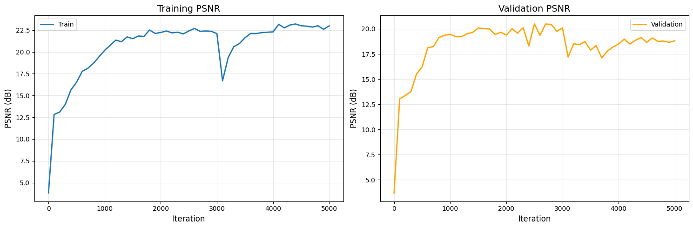
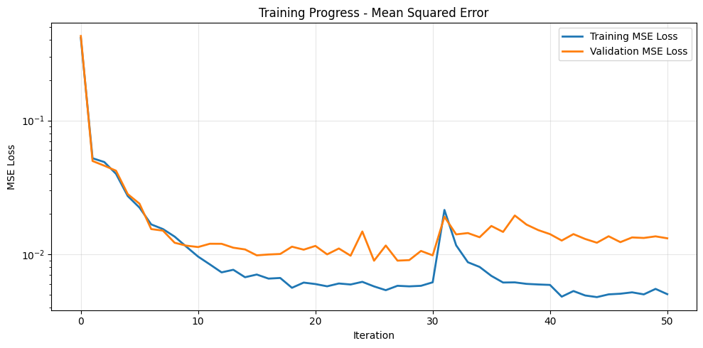
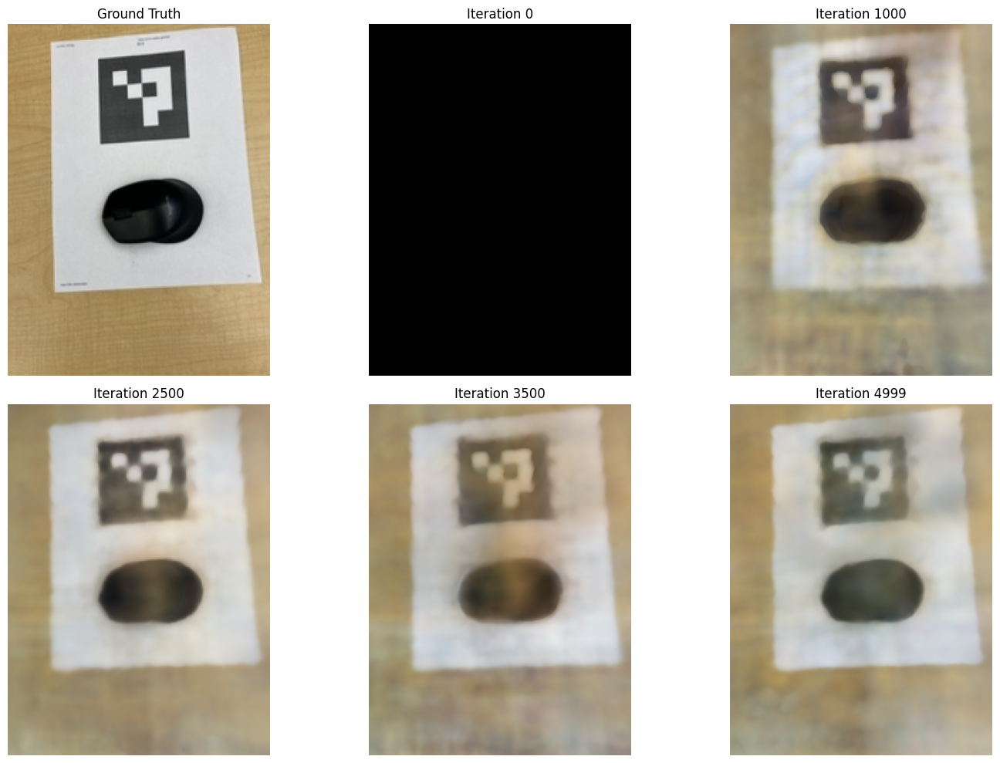